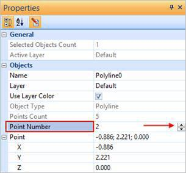
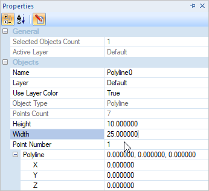

Edit Mode can be enabled by clicking on the Edit Mode icon in the Properties dialog and can be toggled on and off by clicking it. With Edit Mode active, the points are visible in the viewport and coordinates displayed in the properties dialog. They are grayed out in the Properties tab if Edit Mode is not active.
|
The Properties tab can be located in the Status Toolbar. The X, Y, and Z coordinates of the geometry can be modified by changing the Point values within the Properties tab under Objects or graphically by dragging them in the viewport. You can cycle through all the edit points and modify the X, Y and Z coordinates for each point by using the spinner increment. Cycling through these points highlights the points on the geometry in the viewport.
Properties tab Properties tab - Point Number 1  Properties tab - Point Number 2 |
Edit points can also be modified by picking the corner points graphically in the viewport with drag and drop.
|
You can parametrically edit the dimensions of geometry using the Properties dialog. Just select the Edit icon until the dimension values are activated. When you edit a dimension vales and close the Properties dialog the geometry to update automatically.  Edit the Length & Width of a Rectangle Edit the Radius of a Circle |
You can edit the width of a line or curve using the Properties dialog. Just select the Edit icon until the object properties are activated. Then set the Use Layer Thickness to False. This will activate the Thickness field. Drop down the Thickness menu and select a line width. When you edit a dimension vales and close the Properties dialog the geometry to update automatically. Edit the Width of a line or curve Line Width Property Selector |